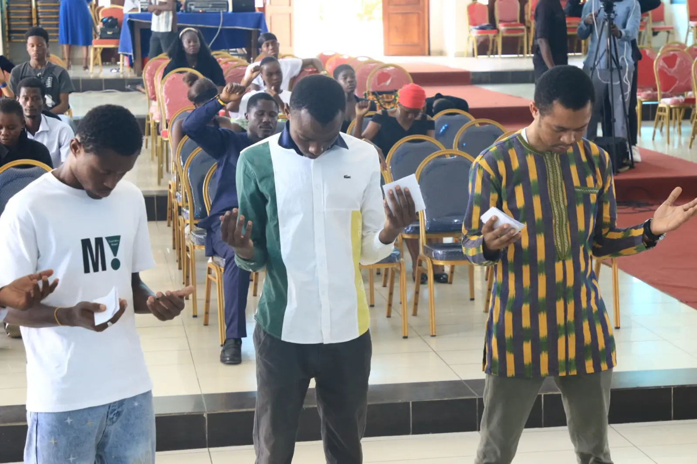
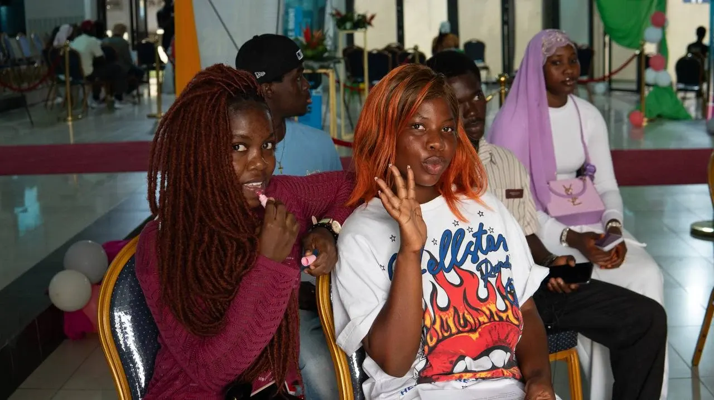
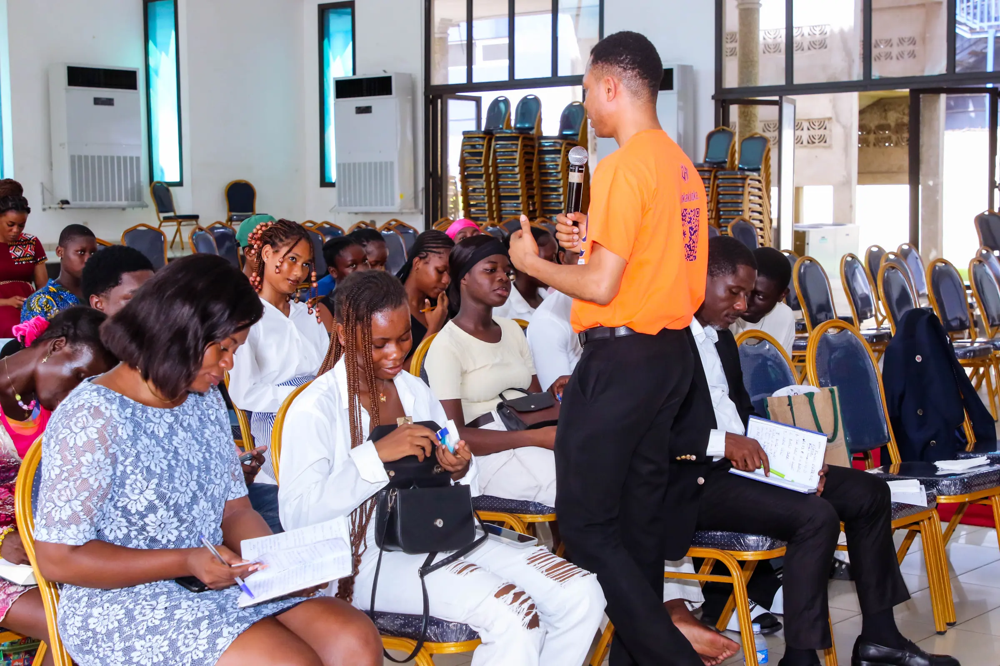
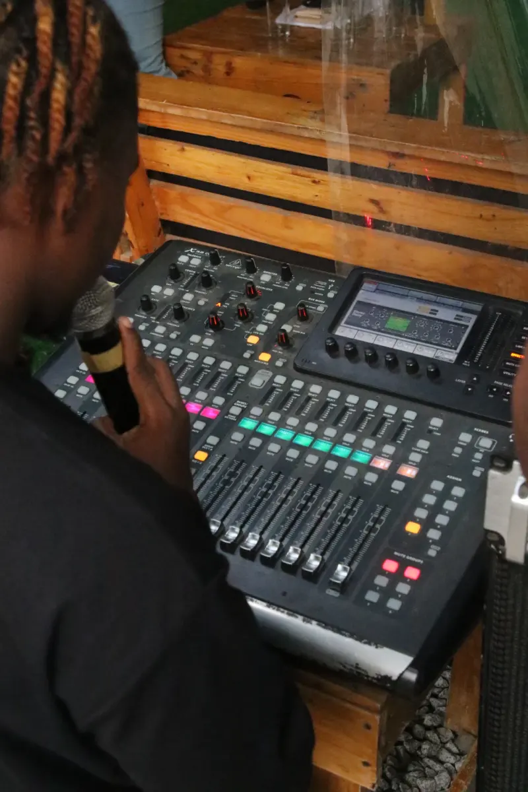
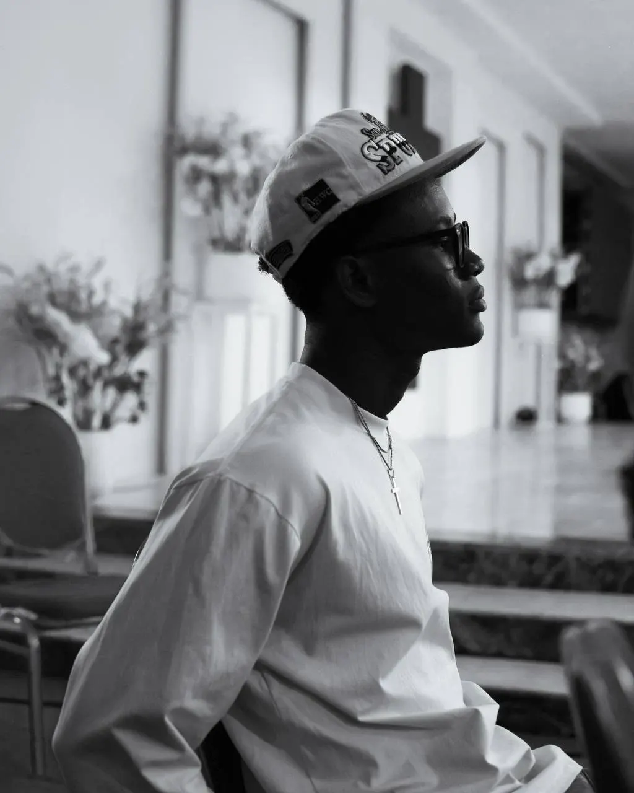
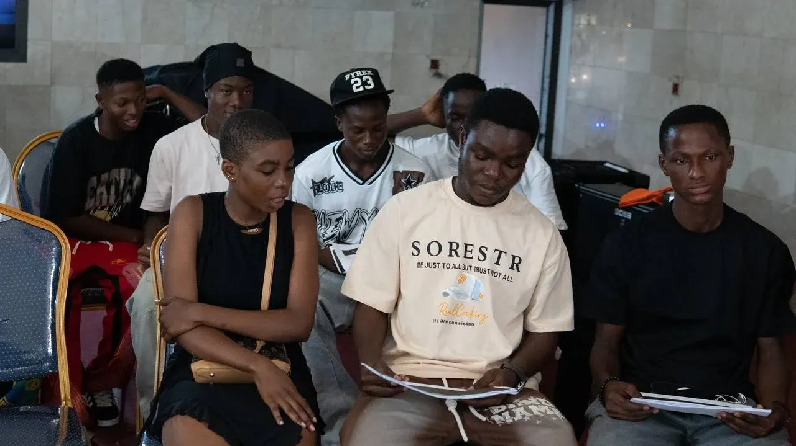
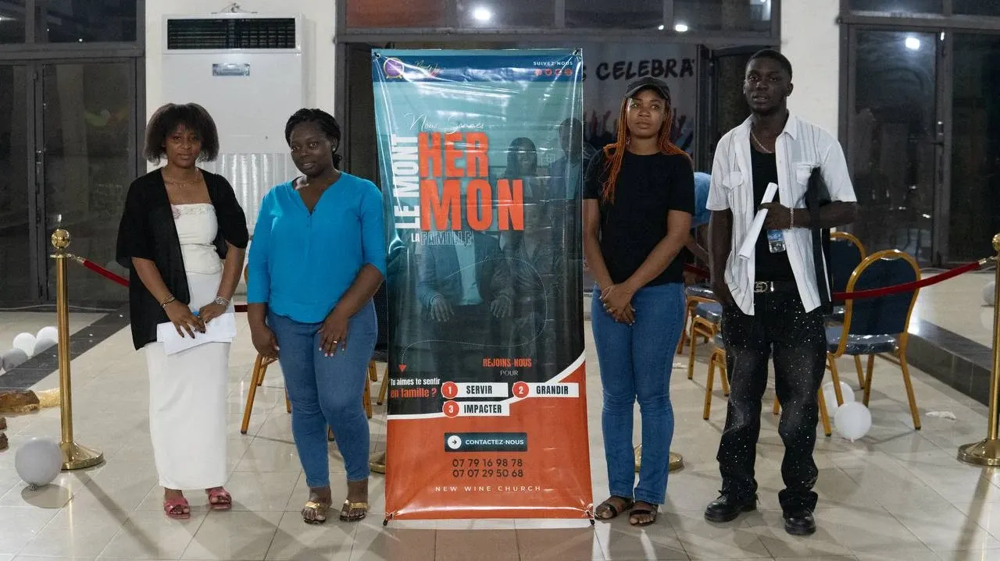
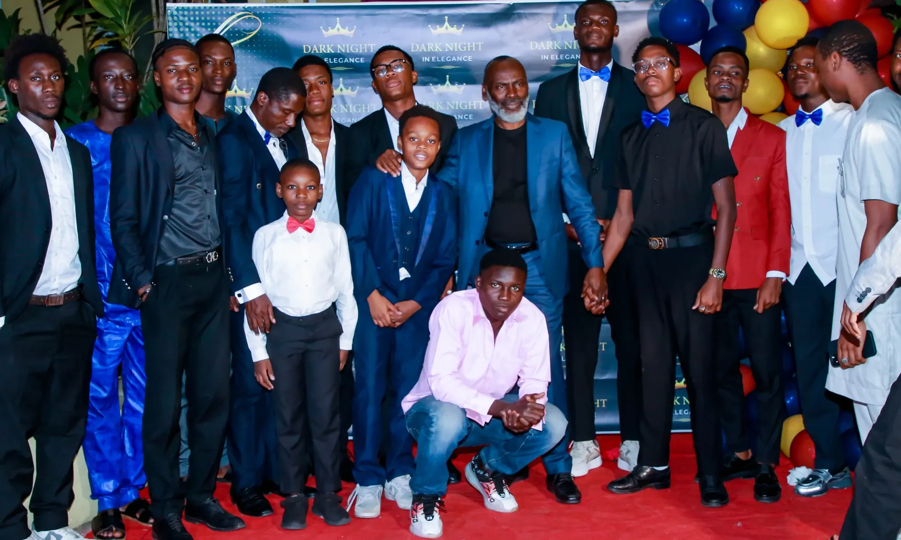

Dernier message
Un enseignement nouveau
00:0048:12
Église de jeunes adultes · Cocody-Bonoumin, Abidjan
Chaque dimanche à 13h, des centaines de jeunes d'Abidjan se retrouvent pour adorer fort, ouvrir la Bible pour de vrai et repartir envoyés. Sauvé pour sauver.
Ta première visite
Deux heures, une salle pleine de jeunes, une louange qui bouge et une Parole qui parle à ta vie. Voilà ce qui se passe, minute par minute.


12h45 · ArrivéeL'équipe Parking & Sécurité t'oriente, l'Accueil te reçoit à l'entrée et te trouve une place. Pas besoin de connaître qui que ce soit.
Louange live avec le Chant, les Dancing Star et le Rap & Musique Urbaine. Ça chante, ça danse, ça prie. Tu peux juste écouter, personne ne te mettra la pression.
Un message direct, ancré dans la Bible, pensé pour ta vie du lundi au samedi : études, boulot, relations, appel.
Après le culte, on traîne, on se rencontre, on prend des nouvelles. C'est souvent là que les amitiés commencent.
Pourquoi « New Wine » ?
New Wine, c'est une nouvelle génération de jeunes à qui l'on transmet un enseignement nouveau. Des cœurs neufs, prêts à recevoir la Parole et à la vivre pour de vrai. On apprend sérieusement. On adore fort. On sert avec nos talents, du micro au parking. Et on repart envoyés : sauvés pour sauver.
Servir
Du micro au parking, de la caméra à la cuisine : à New Wine, personne ne reste spectateur. Choisis une famille et découvre les équipes.
Grandir
Un message chaque dimanche, un podcast, un magazine, une académie et des cellules près de chez toi. La foi se construit toute la semaine.
Dernier message

Pour les nouveaux comme pour ceux qui veulent consolider. Cours en petits groupes, questions bienvenues.
Rejoindre la prochaine session →
Le podcast fait par les jeunes de NWC. Foi, études, couple, ambition : on parle de tout.

New WinePetits groupes de maison dans tout Abidjan pour prier, partager et se porter les uns les autres.
Trouver ma cellule →
Hors antenne
Le culte est diffusé en direct chaque dimanche de 13h00 à 15h00 (heure d'Abidjan). La diaspora est la bienvenue.
Impacter
Chaque membre rejoint une famille, un « mont », liée à une sphère de la société. Parce qu'être sauvé, c'est être envoyé : au gouvernement comme sur les réseaux. Touche un sommet pour le découvrir.

La Famille
« Tu aimes te sentir en famille ? »
Donner
Tes dons financent les cultes, l'évangélisation et les actions sociales de l'église. Avec ton Mobile Money, c'est fait en moins d'une minute.
« Que chacun donne comme il l'a résolu en son cœur, sans tristesse ni contrainte ; car Dieu aime celui qui donne avec joie. »
2 Corinthiens 9:7
Bénéficiaire : NEW WINE CHURCH
Bénéficiaire : NEW WINE CHURCH
Bénéficiaire : NEW WINE CHURCH

Famille
Ta demande arrive directement au gouverneur du département.